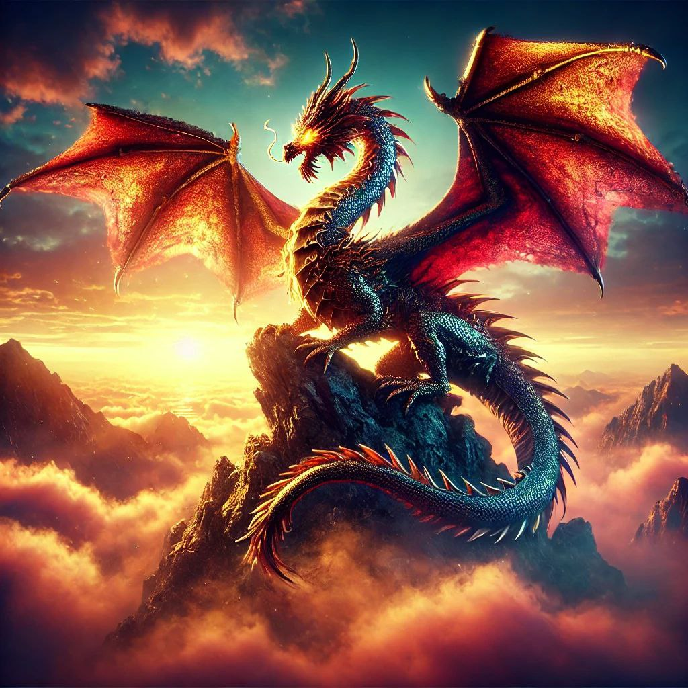

Ваш браузер не поддерживает видео.
Зажигаем экран!
0%
Знаете ли вы? Драконы часто описываются как хранители сокровищ!

Игра загружена!
Войти в игру
Добро пожаловать в Drago Tap!
Здесь начнётся ваша игра.